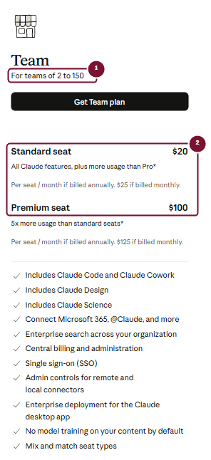
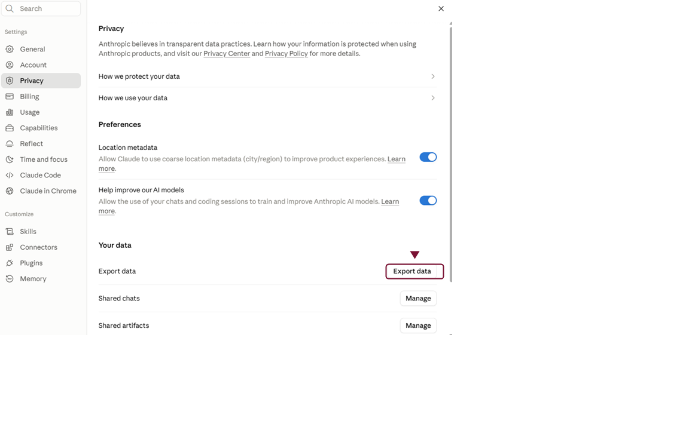
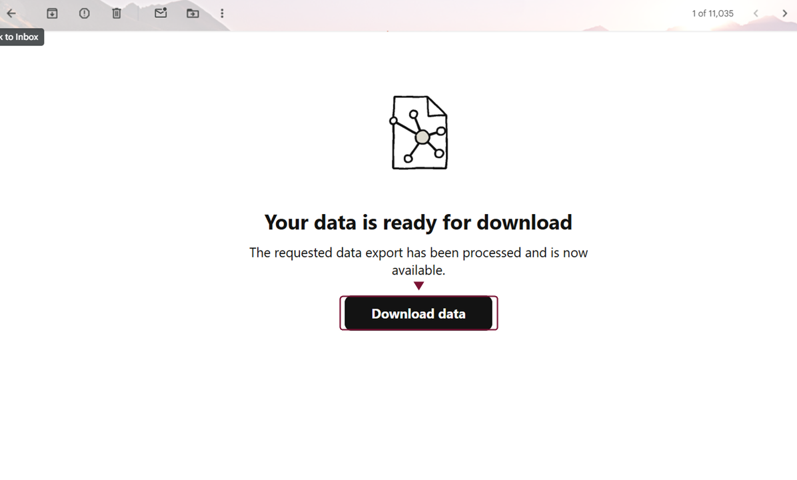
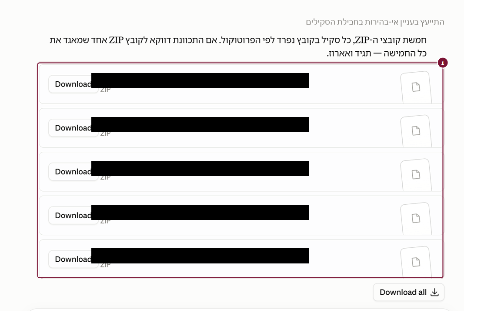

עוברים על המדריך יחד עם Claude
עבור המדריך למעבר בטוח למנוי Team, על כל חלקיו, הכנו ב-Legal Mind פרומפט מלווה. פרומפט הוא הוראות כתובות מראש שמדביקים בשיחה עם Claude. לוחצים על הכפתור, פותחים שיחה חדשה ב-Claude, בחשבון שממנו אתם עוברים, מדביקים ושולחים. Claude יקרא את כל חלקי המדריך, ישאל כמה שאלות על החשבון ויבנה תוכנית מעבר אישית. אחר כך הוא יעבור איתכם סעיף אחר סעיף, ויבקש אישור מפורש לפני כל פעולה שאי אפשר לבטל. Claude רק מנחה: כל לחיצה בחשבון נעשית על ידכם בלבד.
אפשר לקרוא את המדריך בעצמכם, אפשר לעבור עליו עם Claude, ואפשר לשלב. כל אחד בוחר את הדרך שמתאימה לו.
הפרומפט ארוך, ולכן אחרי ההדבקה Claude עשוי להציג אותו כקובץ מצורף מעל תיבת ההודעה. זה תקין. המעבר נמשך בדרך כלל יותר מיום אחד. כשרוצים להפסיק ולהמשיך בפעם אחרת, כותבים ל-Claude שעוצרים, והוא ייתן סיכום קצר של מה שכבר נעשה ומה נשאר. כשחוזרים, פותחים שיחה חדשה, מדביקים שוב את הפרומפט ואת הסיכום, ו-Claude ממשיך מאותה נקודה.
מנוי צרכני לעומת מנוי ביזנסיאלי
Free, Pro ו-Max הם מסלולים צרכניים. אמנם Max מעניק מכסת שימוש גדולה יותר, אך אינו הופך את המנוי למנוי ביזנסיאלי.
Team הוא מנוי ביזנסיאלי, הכולל ניהול ארגוני, חיוב מרוכז, תפקידים והרשאות, לרבות DPA (התחייבויות של Anthropic כלפי המשתמשים בנוגע לפרטיות המידע - יורחב בסעיף 2 להלן).
ראו בפירוט באתר של Anthropic.
עמדת Legal Mind
מבין Free, Pro, Max ו-Team, מסלול Team הוא המתאים ביותר לעבודה משרדית הכוללת מידע מקצועי או רגיש. זו אינה הבטחה שכל שימוש בו בטוח או מותר. המשרד עדיין אחראי למדיניות, הרשאות, צמצום מידע, אבטחת חשבונות ובקרה משפטית ואנושית על התוצרים.
ומה לגבי Enterprise?
Enterprise הוא מסלול מסחרי מתקדם לארגונים שיש להם צרכים ארגוניים נוספים. סדרה זו מתמקדת במעבר ממנוי צרכני (Pro או Max) למנוי ביזנסיאלי (Team).
מה מעניק המנוי הביזנסיאלי (Team) לעורכי דין?
DPA
DPA (Data Processing Addendum) הוא נספח חוזי המעגן את התחייבויות Anthropic כלפי המשתמשים, בנוגע לאופן שבו היא מטפלת במידע שהם מזינים. ה-DPA משולב אוטומטית בתנאים המסחריים - ארגון שמקבל את התנאים המסחריים של Anthropic מקבל עמם גם את ה-DPA, בלי צורך בחתימה נפרדת.
מתוך ה-DPA הרשמי של Anthropic:
"ה-DPA של Anthropic משולב אוטומטית בתנאים המסחריים שלנו... כאשר אתם מקבלים את התנאים המסחריים של Anthropic, אתם מקבלים גם את ה-DPA שלנו."
הנוסח המקורי באנגלית:
"Anthropic's DPA...is automatically incorporated into our Commercial Terms of Service...when you accept Anthropic's Commercial Terms of Service, you also accept our DPA."
ראו את נוסח ה-DPA המלא באתר Anthropic. הסבר זה אינו תחליף לקריאת נוסח ה-DPA המלא.
אימון מודלים
כברירת מחדל, Anthropic אינה משתמשת בקלט ובפלט של מוצריה המסחריים לאימון המודלים.
יש חריג חשוב: כאשר משתמש שולח משוב באמצעות 👍 או 👎, Anthropic עשויה לשמור את השיחה הקשורה למשוב ולהשתמש בה לצורכי ניתוח, מחקר ואימון.
כאשר משתמש שולח משוב, Anthropic עשויה לשמור את השיחה המלאה הקשורה למשוב במערכותיה עד חמש שנים.
לכן Legal Mind ממליצה שבארגון המטפל במידע של לקוחות, Owner או Primary Owner ישקלו לכבות:
Organization settings > Data and Privacy > Rate chats
עמדת Legal Mind
המשתמש הראשי (Primary Owner) צריך לקבוע מדיניות משרדית לגבי המשתמשים - למשל מי רשאי להזין מידע, ומי רשאי לחבר Connectors.
מושבים, מחיר ובעלות
Team מיועד כיום לארגונים של 2 עד 150 משתמשים.
| סוג מושב | חיוב חודשי | חיוב שנתי, מחיר חודשי אפקטיבי |
|---|---|---|
| Standard | 25 דולר | 20 דולר |
| Premium | 125 דולר | 100 דולר |
המחירים המוצגים הם מחירי ארה"ב לפני מסים ועשויים להשתנות. יש לבדוק את מסך הרכישה החי.

אפשר לשלב מושבי Standard ו-Premium. הקיבולת היא אישית לכל משתמש ואינה מאגר משותף לכל המשרד.
מי צריך להיות Primary Owner?
Primary Owner צריך להיות בעל המשרד, שותף מוסמך או חשבון ארגוני שנשאר בשליטת המשרד. אין להקים את סביבת העבודה על חשבון של עובד זמני, מתמחה או ספק חיצוני.
אל תסגרו את החשבון הישן
יצירת Team יוצרת סביבת ארגון חדשה. החשבון הצרכני אינו נסגר אוטומטית.
בשלב ההצטרפות למנוי, לאחר שיצרתם את מנוי Team, תקפוץ הודעה מתוך Claude ותלחצו על:
Keep both accounts
בחלון הזה בחרו Keep both accounts בלבד.
שלוש האפשרויות הבאות סוגרות את החשבון האישי שלכם. אל תבחרו בהן, לא עכשיו ולא בהמשך:
Use your organization account onlyClose your personal accountStart FreshאוDelete your data
ואפשרות רביעית שדורשת הבהרה נפרדת: Bring your data with you היא האפשרות שמעבירה בפועל את השיחות, הפרויקטים והקבצים אל Team. היא נכונה, אבל לא בשלב הזה. ההעברה מבוצעת רק אחרי שהארגון הוקם, המשתמשים הוזמנו והגיבוי הושלם, והיא מפורטת במדריך 3. לחיצה עליה כאן תתחיל את ההגירה לפני שהצוות מוכן ולפני שיש לכם גיבוי.
Export data הוא גיבוי, לא מנגנון הייבוא
בחשבון Free, Pro או Max:
Settings > Privacy > Export data

Privacy > Export data" width="1152" height="720" loading="lazy" decoding="async">לאחר שהבקשה מוכנה מתקבל קישור בדוא"ל. הקישור תקף ל-24 שעות מרגע קבלתו, ודורש שהמשתמש יהיה מחובר.
קובץ Export אינו מיועד לייבוא לחשבון Claude אחר. הוא גיבוי לפני פעולה חד-כיוונית. מסלול ההעברה הרשמי ל-Team הוא Bring your data with you (ראו מדריך 3, שם מפורט התהליך המלא).
מסמכים שהעליתם ל-Claude כקובצי Word או PDF אינם מוחזרים בייצוא בפורמט המקורי שלהם, אלא כקובצי טקסט מסוג MD.
המשמעות המעשית לעורך דין: העימוד, הטבלאות, הערות השוליים, החתימות והנספחים אינם נשמרים בקובץ שחוזר. מי שמניח שקיבל גיבוי מלא של המסמכים עצמם - טועה.
לכן הגיבוי האמיתי של מסמכי הלקוח אינו הייצוא הזה, אלא הקבצים המקוריים כפי שהם שמורים אצלכם במשרד. ודאו שהם קיימים ונגישים לפני שמתחילים במעבר. הייצוא משמש לגיבוי השיחות וההקשר, לא להחזרת המסמכים.
בדיקת הגיבוי
אל תסתפקו בלחיצה על Export. ודאו ש:
- הדוא"ל התקבל.
- הקובץ הורד.
- הקובץ נפתח.
- נשמר עותק נוסף במקום בשליטת המשרד.

Custom Skills אינם עוברים למנוי החדש באמצעים הרשמיים של Anthropic
Custom Skills הם כל סקיל שאינו אחד הסקילים הרשמיים ש-Anthropic עצמה בונה ומספקת מראש (כמו הסקילים לעבודה עם PowerPoint, Excel, Word ו-PDF) - כלומר כל סקיל שהמשתמש עצמו כתב או התקין ממקור חיצוני. ניתן לראות אילו Custom Skills מותקנים כרגע בחשבון תחת Settings > Customize.
מסלול ההעברה הרשמי והסופי למנוי Team נקרא Bring your data with you, ומוסבר בהרחבה במדריך 3. Custom Skills אינם ברשימת הפריטים שהוא מעביר.
משום כך, Custom Skills דורשים גיבוי נפרד כבר בשלבים המוקדמים, דרך Export data (סעיף 5). יש לוודא שהגיבוי הושלם לפני שמבצעים את הבחירה הסופית.
מכיוון ש-Custom Skills אינם עוברים למנוי החדש, ומדובר באחד הנכסים החשובים ביותר שקיימים כרגע במנוי הישן, Legal Mind כתבה פרומפט מסודר עם הסבר מלא, שמאפשר לכם לבקש מ-Claude לאתר את אותם Custom Skills, ולאגד אותם עבורכם בקבצי ZIP, באופן שיפורט להלן.
Legal Mind SkillSafe
Legal Mind פיתחה פרומפט שמבקש מ-Claude לבדוק תחילה אם קיימת גישה ישירה לקובצי ה-Skills המקוריים. רק כאשר קיימת גישה כזאת, הפרומפט מורה לו לארוז את התיקייה המקורית ללא שינוי, לבדוק הפניות פנימיות, לוודא שההעתק זהה לחלוטין למקור בלי שום שינוי, וליצור ZIP שניתן להעלות מחדש כמו Skill רגיל.
המלצת Legal Mind
עבדו בקבוצות של עד 5 Skills בכל סבב. זו אינה מגבלה רשמית של Claude, אלא שיטת בקרה שמקטינה את הסיכון להשמטה ומקלה על בדיקת כל ZIP. Skill הכולל עשרות קבצים מומלץ לגבות לבדו.
איך בפועל מבקשים מ-Claude למצוא Skills
לפני העתקת הפרומפט, הכינו רשימה של שמות ה-Skills שברצונכם לגבות (עד 5, כמומלץ למעלה). לאחר מכן הדביקו את הפרומפט כהודעה חדשה בשיחה עם Claude, בסביבה שבה יש לו גישה ישירה לקבצים במחשב. בשל אורך הפרומפט, הוא עשוי להופיע מעל תיבת ההודעה כקובץ מצורף במקום כטקסט גלוי - זו התנהגות רגילה ולא תקלה.
באותה הודעה, לפני השליחה, הוסיפו בקשה מפורשת עם שמות ה-Skills. לדוגמה: "מצא לי את 5 ה-Skills הבאים, כולל כל הקבצים המצורפים אליהם: [שמות]." אם אין לכם רשימה מוכנה, אפשר לבקש "5 אקראיים" - הפרומפט מנחה את Claude לבחור בעצמו.
בסיום, עברו על דוח הסבב ש-Claude מפיק - הוא כולל כבר, לפי הוראות הפרומפט, גם היכן נשמרו קובצי ה-ZIP והמניפסטים.
Legal Mind SkillSafe
פרומפט לחילוץ, אימות ואריזת Claude Skills כחבילות התקנה מחדש
מטרת המשימה
עלי לשמור את ה-Skills האישיים שלי לפני מעבר לחשבון Claude Team.
עבוד רק על Skills שאליהם יש לך גישה ישירה בפועל לקבצים המקוריים. אל תשחזר מתוך זיכרון, מתוך שמות, מתוך שיחות קודמות או מתוך ניחוש, אלא אם תודיע במפורש שאין גישה למקור ותעצור לפני יצירת חבילת גיבוי "מקורית".
כלל יסוד
יש שתי אפשרויות בלבד:
אפשרות א - קיימת גישה ישירה לקובצי ה-Skills המותקנים
- אתר את תיקיית ה-Skills האישיים ואת הקבצים המקוריים.
- קרא את הקבצים עצמם.
- צור גיבוי מקורי, ללא שכתוב, תיקון, קיצור, שינוי שמות או שינוי מבנה.
אפשרות ב - אין גישה ישירה לקבצים המקוריים
- אל תציג שחזור משוער כגיבוי מקורי.
- עצור ודווח שאין גישה ישירה.
- פרט מה כן נגיש ומה ניתן לשחזר באופן משוער בלבד.
- אל תיצור ZIP שמוצג כעותק מקורי.
היקף ברירת מחדל
עבוד על עד 5 Skills בכל סבב.
אם לא ציינתי שמות, שאל אותי אילו Skills לבחור.
אם כתבתי "5 אקראיים", בחר חמישה בעלי מבנים שונים ככל האפשר, למשל:
- Skill עם קובץ הוראות מרכזי בלבד.
- Skill עם references.
- Skill עם templates.
- Skill עם scripts.
- Skill מורכב הכולל כמה תיקיות משנה.
Skill גדול במיוחד, הכולל עשרות קבצים או תיקיות עמוקות, יש לעבד לבדו או יחד עם Skill אחד נוסף בלבד.
פעולות חובה לכל Skill
- אתר את תיקיית המקור של ה-Skill.
- הצג את שם ה-Skill ואת נתיב המקור.
- בנה רשימת מצאי מלאה ורקורסיבית של כל הקבצים והתיקיות.
- שמור את שמות הקבצים, אותיות גדולות וקטנות, מבנה התיקיות והסיומות בדיוק כפי שהם במקור.
- ודא שקובץ ההוראות המרכזי של ה-Skill קיים בשם שבו הוא מופיע במקור. אל תשנה בין SKILL.md ל-skill.md או להפך.
- קרא את קובץ ההוראות המרכזי ואתר כל הפניה לקובץ פנימי, reference, template, script, image, schema או resource.
- ודא שכל קובץ שמוזכר אכן קיים בנתיב הצפוי.
- אם קובץ חסר, אל תמציא אותו ואל תתקן את ההפניה. דווח על החוסר במניפסט.
- סרוק לאיתור סודות או פרטי גישה אפשריים, לרבות:
- קובצי .env
- API keys
- access tokens
- refresh tokens
- client secrets
- passwords
- private keys
- קובצי .pem או .key
- credentials JSON
- ערכים ארוכים החשודים כמפתחות
- אל תסיר או תשנה דבר בלי אישור. אם נמצאה התראה, דווח והפרד בין מונח תיעודי לבין ערך סודי אמיתי.
- חשב SHA-256 לכל קובץ מקור.
- העתק את התיקייה ללא שינוי לאזור גיבוי זמני.
- חשב SHA-256 לכל קובץ מועתק והשווה למקור.
- אם טביעה אחת אינה זהה, עצור את אריזת אותו Skill ודווח על הכשל.
- צור Restore ZIP נקי להתקנה מחדש.
מבנה ZIP מחייב
ה-ZIP חייב להכיל תיקיית Skill אחת בשורש, ולא קבצים חשופים בשורש.
מבנה נכון (שם קובץ ההוראות המרכזי, SKILL.md או skill.md, נשאר בדיוק כפי שהוא מופיע במקור):
skill-name.zip
└── skill-name/
├── SKILL.md
├── references/
├── templates/
├── scripts/
└── יתר קובצי המקורמבנה אסור:
skill-name.zip
├── SKILL.md
├── references/
└── scripts/אל תוסיף לתוך Restore ZIP קובץ שלא היה בתיקיית המקור.
BACKUP-MANIFEST חיצוני
צור לכל Skill קובץ מניפסט נפרד מחוץ ל-Restore ZIP.
שם מוצע:
skill-name-BACKUP-MANIFEST.mdהמניפסט יכלול:
- שם ה-Skill.
- נתיב המקור.
- תאריך ושעת הגיבוי.
- מספר הקבצים.
- מספר תיקיות המשנה.
- גודל כולל.
- עץ תיקיות מלא.
- שם, גודל ו-SHA-256 של כל קובץ.
- תוצאת ההשוואה למקור.
- הפניות פנימיות שנבדקו.
- קבצים חסרים, אם נמצאו.
- תלויות תוכנה וחבילות חיצוניות.
- דומיינים או שירותים חיצוניים המוזכרים.
- התראות אבטחה.
- הוראות התקנה מחדש.
- סטטוס סופי: "גיבוי מקורי מאומת", "נעצר עקב פער" או "שחזור משוער בלבד".
בדיקת ZIP
לאחר יצירת כל ZIP:
- פתח אותו מחדש.
- ודא שאין שגיאת ארכיון.
- ודא שקיימת תיקיית Skill אחת בשורש.
- ודא שכל הקבצים המקוריים נמצאים.
- ודא שאין BACKUP-MANIFEST בתוך חבילת ההתקנה.
- ודא שה-SHA-256 של הקבצים לאחר חילוץ מה-ZIP זהה למקור.
תוצרים
צור שתי תיקיות פלט נפרדות:
restore-zips/
audit-manifests/בתיקייה restore-zips שמור רק את חבילות ההתקנה.
בתיקייה audit-manifests שמור את המניפסטים ואת דוח הסבב.
דוח סבב
בסיום הצג טבלה הכוללת:
- שם Skill.
- מספר קבצים.
- תיקיות משנה מרכזיות.
- ZIP נפתח ללא שגיאה.
- התאמת SHA-256.
- הפניות חסרות.
- התראות אבטחה.
- סטטוס.
ציין במפורש:
- כמה Skills אישיים אותרו בסך הכול.
- אילו Skills גובו בסבב הנוכחי.
- אילו Skills גדולים במיוחד ומומלץ לעבד בנפרד.
- היכן נשמרו קובצי ה-ZIP והמניפסטים.
איסורים
- אל תשכתב את הוראות ה-Skill.
- אל "תשפר" ניסוחים.
- אל תשנה שמות או casing.
- אל תחליף קבצים חסרים בקבצים מומצאים.
- אל תכניס מניפסט לתוך ZIP ההתקנה.
- אל תציג שחזור משוער כגיבוי מקורי.
- אל תעבד יותר מ-5 Skills בסבב בלי שאבקש זאת מפורשות.
משפט פתיחה לביצוע
התחל בבדיקה האם קיימת גישה ישירה בפועל לקובצי ה-Skills המותקנים. דווח על נתיב המקור ועל מספר ה-Skills שנמצאו. רק לאחר מכן המשך בהתאם לאפשרות א או ב.

- 1קובץ Restore ZIP נפרד לכל Skill - מבנה התיקייה הפנימי (תיקיית Skill אחת בשורש) מפורט למעלה בהוראות הפרומפט.
מה לשמור במחשב?
לאחר שהזנו את Claude ב-Prompt, ולאחר ש-Claude ייבא לנו את הקבצים הרלוונטיים, עלינו לשמור אותם במחשב - ולדעת באיזו צורה לשמור אותם. לכל Skill יש לשמור:
- Restore ZIP נקי - מאפשר לשחזר את ה-Skill עצמו בעתיד.
- BACKUP-MANIFEST נפרד - מתעד את כל הקבצים וההפניות (references) ששייכים ל-Skill.
- עותק של קובץ ההוראות המרכזי.
- תיעוד של חיבורים חיצוניים והרשאות שיידרשו לאחר המעבר.
נכסים נוספים שיש לתעד
לפני המעבר עברו על:
- Connected apps
- Custom Connectors
- Published Artifacts
- קישורי שיתוף ציבוריים.
- Tasks ו-Cowork sessions.
- Claude Code cloud sessions
- Custom Instructions, אם קיימות בחשבון.
תעדו ושמרו כל רכיב רלוונטי מהרשימה שלמעלה. הרכיבים האלה אינם עוברים אוטומטית למנוי Team, ותצטרכו להקים אותם מחדש בסביבה החדשה לאחר המעבר.
נקודת עצירה בסוף מדריך 1
אל תמשיכו למדריך 2 עד שכל הסעיפים הבאים הושלמו ונבדקו:
- התקבלה החלטה שהמשרד יעבוד במנוי Team ב-Claude.
- נקבע מי ישמש Primary Owner של הארגון.
- נקבע סוג המושב המתאים לכל משתמש: Standard או Premium.
- החומר שגובה באמצעות Export data נשמר בתיקיית הגיבוי הייעודית שנקבעה לכך.
- עותק נוסף של תיקיית הגיבוי נשמר במקום נפרד, רצוי בשרת או בענן.
- כל ה-Custom Skills גובו באמצעות SkillSafe או בגיבוי ידני שנבדק ואומת.
- כל הרכיבים שאינם עוברים אוטומטית למנוי Team ב-Claude תועדו וגובו בהתאם להוראות המדריך.
- החשבון האישי עדיין פעיל ונגיש.
- תהליך ההגירה למנוי Team ב-Claude טרם הופעל, והחשבון האישי טרם נסגר.